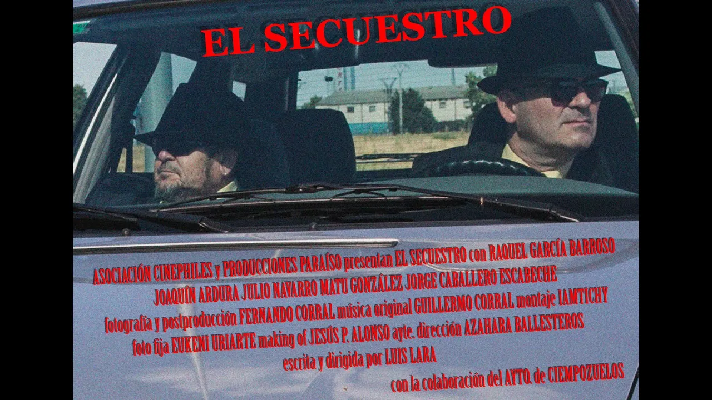

El secuestro
2019

Sinopsis
Dos delincuentes de poca monta consiguen un trabajo para un gran jefe de la mafia.
Ficha Técnica
- Dirección: Luis Lara
- Guion: Luis Lara
- Reparto :Julio Navarro, Joaquín Ardura, Matu González, Raquel García Barros, Jorge Caballero, Escabeche
- Producción: Producciones Paraíso, Cinephiles
- Montaje: Luis Lara
- Fotografía y vfx: Fernando Corral
- Sonido: Guillermo Corral
- Música: Guillermo Corral
- Ayte. Dirección: Azahara Ballesteros
- Aux. Producción: Martha Uribe
- Making of: Jorge Alonso
- Formato de rodaje: 4K, 24fps (Canon H1C) | 2.35
- Ópticas: Integrada
- Software usado:Adobe Premiere Pro, Davinci Resolv, Adobe After Effects
- Duración: 12 minutos
Imágenes


Making Of